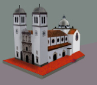
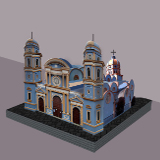

-

Catedral de San Cristobal
San Cristobal
-

Iglesia de Nuestra Señora del Rosario de Chiquinquirá
Lobatera
-

Iglesia San Jose
San Cristobal
-

Iglesia San Juan Bautista
San Cristobal
-

Nuestra señora del perpetuo socorro
San Cristobal
-

Iglesia Santo Domingo de Guzmán (EL ÁNGEL)
San Cristobal
-

Basilica de Nuestra Señora de la Consolación de Táriba
Tariba
-

Basilica del Espíritu Santo
La Grita
-

Iglesia Nuestra Señora de los Ángeles
La Grita
-

Iglesia Santa Barbara
Rubio
-

Iglesia San Antonio de Padua
San Antonio del Táchira
-

Iglesia San Agatón
Palmira
-

Iglesia San Pedro Apóstol
Capacho Nuevo
-

Iglesia San Pedro de Seboruco
Seboruco
-

Iglesia San Pedro
San Pedro del Rio
-

Iglesia nuestra señora del Carmen
Peribeca
-

Iglesia Santa Ana
Santa Ana
-

Iglesia San Bartolomé de Vargas
El Cobre
-

Iglesia San Jose
San José de Bolívar
-

Iglesia San Emigdio
Capacho Viejo
-

Iglesia San Jose
Delicias